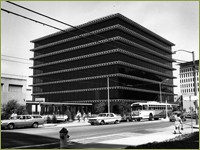
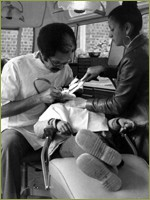
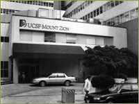

{% include nav.html %}
 By the 1960s the Parnassus site was shedding its identity as “Cal’s medical center” and reference to the UC Medical Center pertained to a variety of clinics, research centers, and hospitals that provided a diverse range of patient care and teaching programs for medical, nursing, dental, pharmacy, and graduate students. In 1960 the UC Hospital began two refurbishment projects to update the 1917 structure.
By the 1960s the Parnassus site was shedding its identity as “Cal’s medical center” and reference to the UC Medical Center pertained to a variety of clinics, research centers, and hospitals that provided a diverse range of patient care and teaching programs for medical, nursing, dental, pharmacy, and graduate students. In 1960 the UC Hospital began two refurbishment projects to update the 1917 structure.
The Medical Center included the Langley Porter Neuropsychiatric Institute (completed in 1943 and became part of the Medical Center’s accreditation in 1962), the Herbert C. Moffitt Hospital (the largest general teaching hospital in the western US when it opened in 1955), and the new ‘clinics building’, later referred to as the Ambulatory Care Center, which opened in 1973. In addition, the Medical Center was responsible for the teaching programs and assisting in the provision of patient care through affiliation with San Francisco General Hospital, Laguna Honda Hospital, and the Veterans Administration Hospital at Fort Miley.
UCSF’s clinical and teaching activities also moved beyond San Francisco to provide service to underserved populations in rural California. In 1972, the University of California Area Health Education Center (AHEC) was established, as part of a nationwide program funded by the Department of Health, Education and Welfare, to help address the health care shortage in underserved areas such as the Central San Joaquin Valley. This led to the creation of the UCSF School of Medicine in Fresno to train medical students and house staff in Valley medical facilities. Also as part of this effort, the School of Pharmacy established a Drug Information and Analysis Center that employed pharmacists and rotated pharmacy students in what was then known as the Valley Medical Center. The Regional Medical Program was another federally-funded program in the 1960s that was designed to speed dissemination of information and services from university healthcare centers to practicing clinicians in community facilities throughout smaller towns and rural areas. This program also enabled the spread of UCSF expertise to outlying areas of Northern California and the central valley.
The Medical Center had long faced financial struggles owing to the unique medical challenges commonly faced by academic medical centers and which tertiary care facilities and referral hospitals often face. The costs of running the center were always substantial, involving a number of expenses beyond patient care, including teaching costs, training grants and trainees, research expenses, costs to modernize and purchase new equipment. Yet the UCSF Medical Center has been required to operate on a substantially self-supporting basis.
In November 1982, Dr. William B. Kerr, director of the UCSF Hospitals and Clinics, was advised by the office of the MediCal Special Negotiator that UCSF would not be one of the hospitals in San Francisco County to receive a contract to provide care for MediCal patients. As a state-wide referral center for patients who needed specialized care and in some cases unique diagnostic and treatment services, this was a discouraging decision. It was estimated at that time that approximately 15% of all patients at Moffitt and UC Hospital were MediCal beneficiaries (about 2900 patients a year). This translated into a projected loss of $16 million a year in revenue.
Despite many challenges to the management of the Medical Center, expansion continued. In 1983 the fifteen-story Joseph M. Long Hospital was dedicated. The new hospital featured the Francis A. Sooy Surgical Pavilion and an adjacent post-anesthesia recovery room on the fourth floor, the Herbst Emergency Service Pavilion on the first floor; the Walter Haas Radiation Oncology Pavilion on the ground floor; new physical therapy, inhalation therapy and pharmacy units, plus a whole array of new diagnostic facilities, including a newly-invented Nuclear Magnetic Resonance (NMR) imaging (now known as Magnetic Resonance Imaging [MRI]).
In December 1984 UCSF and Mt. Zion Hospital and Medical Center entered into an agreement committing both to develop a strategic plan to consolidate and coordinate programs and resources.
This arrangement led to the establishment of a Mt. Zion / UCSF Foundation to coordinate fund-raising, and collaboration on determining functions and responsibilities of academic leadership, coordination of teaching and clinical programs, and providing a broader primary care base in the community.
>> Updates to Campus Buildings
1959–1989 Modernization and the Expansion of Scientific and Clinical Training
Modernizing the UC Medical Center
Langley Porter Psychiatric Institute
The Medical Center included the Langley Porter Neuropsychiatric Institute (completed in 1943 and became part of the Medical Center’s accreditation in 1962), the Herbert C. Moffitt Hospital (the largest general teaching hospital in the western US when it opened in 1955), and the new ‘clinics building’, later referred to as the Ambulatory Care Center, which opened in 1973. In addition, the Medical Center was responsible for the teaching programs and assisting in the provision of patient care through affiliation with San Francisco General Hospital, Laguna Honda Hospital, and the Veterans Administration Hospital at Fort Miley.

The three School of Medicine departments that were formerly at Berkeley—Anatomy, Biochemistry, and Physiology—had, by winter 1958, completed their move to the new Medical Sciences Building at Parnassus, thus returning the first 2 years of medical school instruction to the San Francisco campus. But the Medical Center—as UCSF was then called –also promoted campus events and activities across all the schools and the Graduate Division in lunch hour Discussion Series such as the “Health Sciences and the Problems of Man” interdepartmental seminar. The Medical Center Library was equipped with a broad reference collection in all aspects of the health sciences. The literature ranged from contemporary formulations of biological theory to handbooks of psychiatric nursing.
The Ambulatory Care Center, 1974
UCSF’s clinical and teaching activities also moved beyond San Francisco to provide service to underserved populations in rural California. In 1972, the University of California Area Health Education Center (AHEC) was established, as part of a nationwide program funded by the Department of Health, Education and Welfare, to help address the health care shortage in underserved areas such as the Central San Joaquin Valley. This led to the creation of the UCSF School of Medicine in Fresno to train medical students and house staff in Valley medical facilities. Also as part of this effort, the School of Pharmacy established a Drug Information and Analysis Center that employed pharmacists and rotated pharmacy students in what was then known as the Valley Medical Center. The Regional Medical Program was another federally-funded program in the 1960s that was designed to speed dissemination of information and services from university healthcare centers to practicing clinicians in community facilities throughout smaller towns and rural areas. This program also enabled the spread of UCSF expertise to outlying areas of Northern California and the central valley.

Also providing care to underserved communities in the Valley was UCSF School of Dentistry. The Mobile Dental Clinic program, headed by Marvin Stark, DDS, had been working in the community since 1965, regularly visiting such places as the California School of the Deaf to offer screening and referral services. Beginning in 1970, the program enlarged and began visiting migrant farm workers’ camps in the San Joaquin and Sacramento Valleys with mobile clinics to provide definitive dental treatment to the workers’ children. Recruitment efforts at the School of Dentistry had also focused on students from disadvantaged and minority backgrounds under the school’s federally-funded Program for the Recruitment and Retention of Disadvantaged Students (RAR). More than 90% of the disadvantaged and minority students who graduated from UCSF School of Dentistry in the decade following its inception in 1968 returned to the communities from which they came.
UCSF dentists in the Mobile Dental Clinic, 1974
The Medical Center had long faced financial struggles owing to the unique medical challenges commonly faced by academic medical centers and which tertiary care facilities and referral hospitals often face. The costs of running the center were always substantial, involving a number of expenses beyond patient care, including teaching costs, training grants and trainees, research expenses, costs to modernize and purchase new equipment. Yet the UCSF Medical Center has been required to operate on a substantially self-supporting basis.
By the 1980s, the UC Medical Center at Parnassus oversaw 570 beds that served 20,000 inpatients each year. The outpatient clinics provided care for more than 135,000 patient visits each year.
Despite many challenges to the management of the Medical Center, expansion continued. In 1983 the fifteen-story Joseph M. Long Hospital was dedicated. The new hospital featured the Francis A. Sooy Surgical Pavilion and an adjacent post-anesthesia recovery room on the fourth floor, the Herbst Emergency Service Pavilion on the first floor; the Walter Haas Radiation Oncology Pavilion on the ground floor; new physical therapy, inhalation therapy and pharmacy units, plus a whole array of new diagnostic facilities, including a newly-invented Nuclear Magnetic Resonance (NMR) imaging (now known as Magnetic Resonance Imaging [MRI]).

The Cardiovascular Research Institute expanded its thirteenth floor space from Moffitt. It cost $71 million, supported by $36 million from state and university funds, an $11 million state bond, and millions from foundations and private individuals.
UCSF Mt. Zion Hospital
In December 1984 UCSF and Mt. Zion Hospital and Medical Center entered into an agreement committing both to develop a strategic plan to consolidate and coordinate programs and resources.
This arrangement led to the establishment of a Mt. Zion / UCSF Foundation to coordinate fund-raising, and collaboration on determining functions and responsibilities of academic leadership, coordination of teaching and clinical programs, and providing a broader primary care base in the community.
>> Updates to Campus Buildings